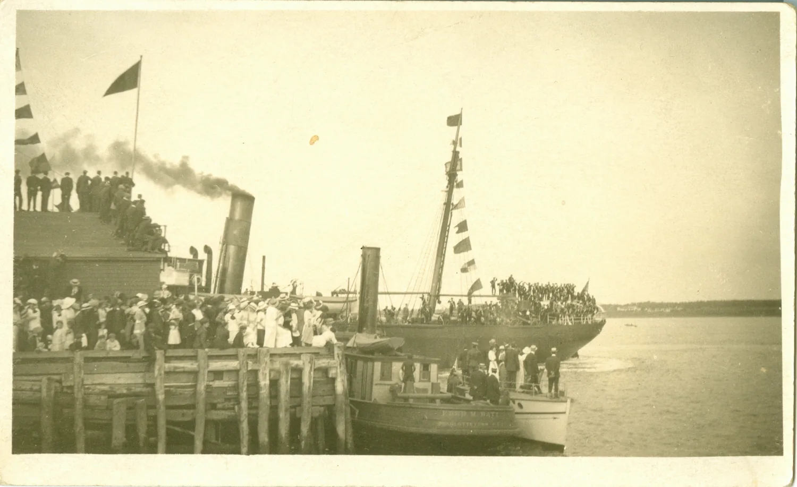

PEI’s Greatest Postcards – #6 – Troops Embarking at Charlottetown
Look at the man just below the word MARINE. He has found a place to sit with his legs dangling. Other men are sitting high on the deckhouse and along the white rail. Follow that rail through the group and the arrangement makes sense. It is part of the ship. At the very bottom of the photograph, two heavy gun barrels run out of the frame. These are the men of the Prince Edward Island Heavy Brigade, Canadian Garrison Artillery, sitting wherever they could on the steamer that was taking them away. It is almost certainly the afternoon of August 5, 1914, at Buntain & Bell’s Wharf in Charlottetown. The ship is the S.S. Cacouna.

Somebody wrote the place in red across the sky. On the back are the few words that made me keep looking: “troops embarking” and “Aug. 5/14.” The writer left no address and there is no postmark. Even so, I think we can put a name to the vessel, identify the unit, and say where the men were going and what they were to do when they got there.
The view from farther down the wharf
Here is a second surviving photograph of this departure. The City of Charlottetown Archives dates it to August 5 and places the Cacouna at Buntain & Bell’s Wharf. Batt’s tugboat lies in the foreground. Look beyond its funnel to the right. Against the bright water is the end of the steamer with men perched high above the hull. Now go back to the postcard and look at the peaked caps, the white straps crossing the dark tunics, and the boots hanging over the side. The wider view locates the departure. The close one lets us see where individual men sat and how closely the guns and their wheels crowded the foreground.


The City’s view includes people on the timber wharf and up on a waterfront building. The postcard gives most of its space to the men aboard. The visible gun barrels make a difference too. The newspaper’s four guns can seem an abstract item on a cargo list until you can trace two barrels past the spoked wheels. The views were taken from different positions. The elapsed time, the photographer or photographers, and the identities of the people along the lower edge remain unknown.
Then there is that enormous sign: MARINE AND FISHERIES. The name of the wharf on the City’s photograph puzzled me until I looked at the arrangement of the waterfront. The Marine and Fisheries Wharf stood immediately beside Buntain & Bell’s, with a marine railway between them where boats could be hauled clear of the water. The two names can both be right. Go back a little further and you find a third name for the same stretch of waterfront. An earlier photograph shows Peake’s No. 3 Wharf, the property later known as Buntain & Bell’s. The wharves and marine railway from the air.
What an Islander wrote before the bell rang
Two days before the departure, another Island postcard was already in the mail. The front of 2970 is a Bayer photograph of a wooded slope at Bonshaw and a little boat on the water. The back is addressed to Miss Kate Harris in Pictou, Nova Scotia. Annie begins “Dear Sisters” and heads her message “Sunday eve.” The Charlottetown cancellation reads August 3, 1914, at 6:30 in the morning. A person looking only through an album of pictures labelled “war” could pass right over it.
Annie reported that men on their way to Petawawa had been turned back. She told her sisters they were home again and attributed the change to the war. What would happen to the men still here was uncertain to her. The brief message gives no unit and no individual names. Its value is the date. Before Charlottetown heard the formal announcement of Britain’s declaration, an Island family was already discussing military travel that had gone awry. Her quiet Bonshaw river scene and the photograph of boots dangling from the Cacouna are separated by two dates on the backs. Annie’s Sunday-evening card, 2970

What had happened since the evening before
At about 8:30 on Tuesday evening, August 4, Charlottetown heard Big Donald. The great brass fire bell was announcing that Britain had declared war on Germany. That declaration brought Canada into the war. By the following afternoon the Island artillerymen had marched down to the waterfront. By the calendar, it was the very next day. This appears to be the Island’s first wartime deployment after the declaration. Annie’s card makes that speed easier to understand. People had been trying to make sense of military movements even before the bell rang. G. Edward MacDonald, If You’re Stronghearted, “Weary with the world’s woe,” pp. 45–46.
How could the Island put men and heavy guns aboard ship that quickly? Charlottetown already had trained militia artillerymen. The City’s exhibit uses the familiar name “4th Prince Edward Island Heavy Brigade.” The military records account for the extra number. On June 1, 1912, the old 4th Brigade had been reorganized as the Prince Edward Island Heavy Brigade, with the 3rd and 4th Heavy Batteries. The headquarters was in Charlottetown. The men wearing those white crossbelts belonged to an Island unit that their neighbours had known in peacetime. Library and Archives Canada, artillery guide, p. 71.

Four guns, forty horses and a cable station
The Cacouna was a Black Diamond Line freight steamer put into military service for the crossing. In its ordinary shipping column on August 11, the St. John’s Mail and Advocate introduced the steamer as ten days out of Montreal and newly arrived by the usual ports. Then, in five lines, it set out what she had taken on at Charlottetown, 125 soldiers, six officers, forty horses and four large guns. That puts 131 military personnel aboard a civilian working vessel. Look again at the postcard. Two of the barrels are plain enough against the wheels at the lower left. The newspaper lets us account for the horses even though I can’t pick one out in the picture. Mail and Advocate, August 11, 1914, p. 6.
The paper said the steamer proceeded to Hawkesbury. Sixty men were assigned to Canso to guard the cable. The rest were to guard the wireless station, with Sydney named in the account of their landing. The distinction is worth keeping. We have their postings and the name of the port to which the paper says the ship proceeded. We need a ship’s log to describe how each detachment covered the last part of its journey. Their first posting of the war was across the Strait in Nova Scotia. There is a practical reminder of what was at stake on that very newspaper page. The Anglo-American Telegraph Company warned customers that delays on the Atlantic cable meant that deferred and weekend messages would have to wait behind full-rate traffic. News of the war was travelling over the very sort of connection these Islanders had been sent to protect.
Why post sixty men to a place the size of Canso? The first Western Union cable landed there in May 1881. Three years later the Commercial Cable Company established a relay station at Hazel Hill, about two miles away. On a transatlantic route, the company could bring a cable in from Europe and send the message onward to New York. The men and women waiting for news might be thousands of miles apart, but their words came ashore in a place a person could walk across. The local cable history records houses built for operators and a bachelors’ residence at Hazel Hill. The newspaper assigns the Islanders to cable duty at Canso. It leaves open which office or landing any particular man guarded.
The other assignment belonged to a much younger trade. At Marconi Towers, south of Glace Bay on Cape Breton, an antenna field had been built for wireless traffic across the Atlantic to Ireland. Parks Canada describes the station as a major relay point between Europe and North America. That gives some scale to the newspaper’s few words about guarding wireless. Its report gives Sydney as a landing place and does not name the wireless installation. There is enough here to explain why such a station mattered without putting a particular gun or a particular Islander beside a particular mast.
Elsewhere on the same page, a notice invited people in St. John’s to a meeting the following evening about enlisting men for service abroad and organizing home defence. An Island unit had already gone to its first posts while newspaper readers in Newfoundland were being told where to assemble to discuss their own response. Those notices give the shipping paragraph its setting in the first week of the war.
The St. John’s reporter called the Cacouna “the first Canadian steamer to be used as a transport.” I’d keep that one in quotation marks. Canadians had travelled to earlier wars by sea. What the line tells us is how extraordinary it seemed that a freighter on the Montreal run could turn up in St. John’s with a voyage like that behind her.
The ship had seven weeks left
On Saturday, September 26, the Cacouna sailed from St. John’s for Sydney and Montreal. She had just been overhauled. At about 9:30 that night, in dense fog, she went ashore at the Hare’s Ears, Ferryland Head. Mrs. Farrell, the telegraph operator at Ferryland, sent word that the crew was safe. Later reports said the ship’s back had broken and her after end was under water. The Free Press gave her measurements as 250 feet long and 1,457 gross tons. The report names her master as Captain Newman and says word of the grounding reached the Anglo Company through Mrs. Farrell within hours. In August we can see men on the deck. In September it fell to a telegraph operator ashore to let people know the crew had survived. By the end of September she was a total loss. Free Press, September 29, 1914, “S.S. Cacouna Ashore”.
Two other cards in my collection belong to the next chapter. On August 27 and 28 someone in Charlottetown wrote to H. Ronald Stewart at the divisional signals company at Valcartier, where men were assembling for overseas service. The messages switch between ordinary handwriting and Morse code. Grandma took one look at the tiny writing and suggested sending along a pair of glasses. The August 28 card is a view of clam digging at Rocky Point. The writer even went around the front margins. We can identify Stewart by the address on these cards. His name has no place on a roll of the men in the embarkation photograph on the strength of that alone. Put the cards in order and you can follow August from Annie’s Sunday news to the date written on the departure picture to a family writing to a signals man in camp. August 27, card 4648 · August 28, card 4649.
That is why this one belongs in my ten. Someone close enough to see a man’s boots hanging over a rail took the trouble to photograph him there. A few pencilled words on the back have let us come down to Buntain & Bell’s Wharf on the afternoon the Great War arrived at the Charlottetown waterfront.